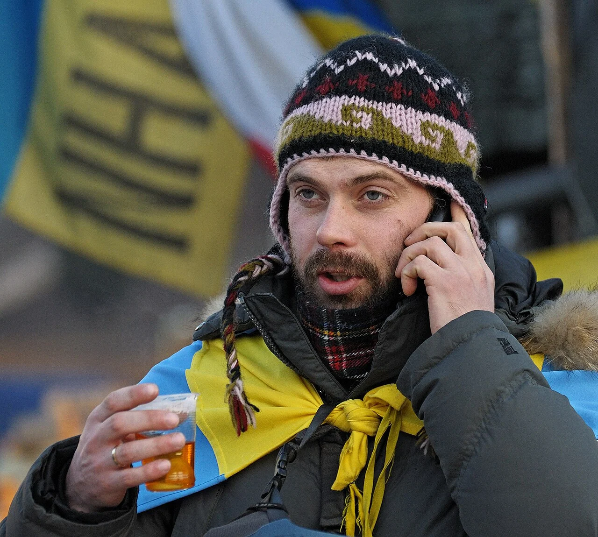

G?rsel: ????????? / Wikimedia Commons, CC BY-SA 3.0.

Winter on Fire: Ukraine's Fight for Freedom, yönetmen Evgeny Afineevsky'nin 2015 tarihli belgeselidir. Film, Ukrayna'da Avrupa Birliği ile yakınlaşma talebiyle başlayan ve daha geniş bir hükûmet karşıtı harekete dönüşen Euromaidan protestolarını ele alır.
Belgesel, meydanlardaki protestocuların, gönüllülerin ve sağlık çalışanlarının görüntülerini ve tanıklıklarını bir araya getirerek hareketin gelişimini takip eder. Olayları ağırlıklı olarak protestolara katılanların bakış açısından aktarır.
Fragman kaynağı: Netflix — YouTube